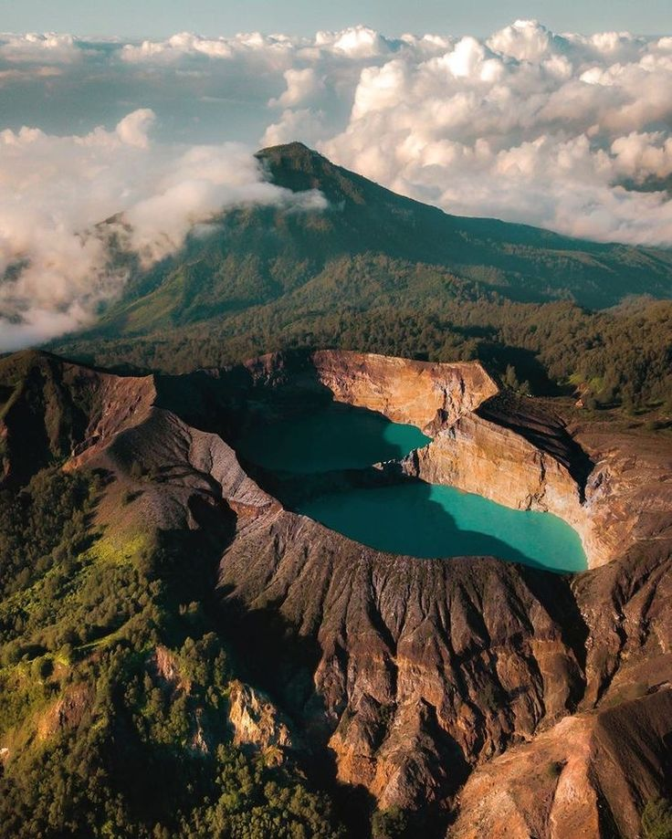

Flores
Danau Kelimutu
Ende, Flores Tengah
Danau vulkanik dengan tiga warna berbeda yang berubah-ubah, dipercaya sebagai tempat arwah leluhur suku Lio.
SelengkapnyaKEAJAIBAN ALAM
Dari danau tiga warna hingga habitat komodo, NTT menawarkan keindahan alam yang menyatu dengan spiritualitas dan budaya lokal
Nusa Tenggara Timur memiliki lanskap geografis unik yang membentang dari pegunungan vulkanik hingga kepulauan tropis. Setiap destinasi alam di NTT tidak hanya menawarkan keindahan visual, tetapi juga makna spiritual yang mendalam bagi masyarakat lokal.
Dari Danau Kelimutu yang berubah warna hingga Taman Nasional Komodo sebagai satu-satunya habitat komodo di dunia, NTT menawarkan pengalaman yang tidak bisa ditemukan di tempat lain.
Ende, Flores Tengah
Danau vulkanik dengan tiga warna berbeda yang berubah-ubah, dipercaya sebagai tempat arwah leluhur suku Lio.
SelengkapnyaTaman Nasional Komodo
Habitat asli komodo (Varanus komodoensis), kadal terbesar di dunia yang hanya ada di Indonesia.
Selengkapnya
Manggarai, Flores Barat
Desa tradisional di ketinggian 1.200 mdpl dengan rumah adat Mbaru Niang yang dikelilingi kabut pegunungan.
Selengkapnya
Manggarai Barat, Flores
Gerbang menuju Taman Nasional Komodo dengan panorama sunset, diving spots, dan island hopping kelas dunia.
Selengkapnya